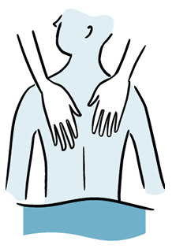

Ayurvedic medicine
Ayurvedic medicine (also called Ayurveda) is one of the world's oldest medical systems.. It originated in India more than 3,000 years ago and remains one of the country's traditional health care systems.
Its concepts about health and disease promote the use of herbal compounds, special diets, and other unique health practices.
Therapy

Many people associate massage with vacations or spas and consider them something of a luxury. But research is beginning to suggest this ancient form of hands-on healing may be more than an indulgence-may help improve your health.Massage therapists use their fingers, hands, forearms and elbows to manipulate the muscles and other soft tissues of the body.
Music
Human beings are innately musical. Our biology demands it. Every human heart beats in its own unique rhythm. The accent patterns of our speech identify us city folk from South Boston or Midwestern farmers from South Dakota.Scientists are convinced that the recognition of specific "danger" sounds[...]
Magnet

Magnets have not been proven to work for any health-related purpose, yet static, or permanent, magnets are widely marketed for pain control. This fact sheet provides basic information about magnets for pain, summarizes scientific research, and suggests sources for additional information.
Pet
Is medicine going to the dogs? Yes, but in a good way. Pet therapy is gaining fans in health care and beyond. Find out what's behind this growing trend.Pet therapy is a broad term that includes animal-assisted therapy and other animal-assisted activities. Animal-assisted therapy is a growing field that uses dogs or other animals[...]